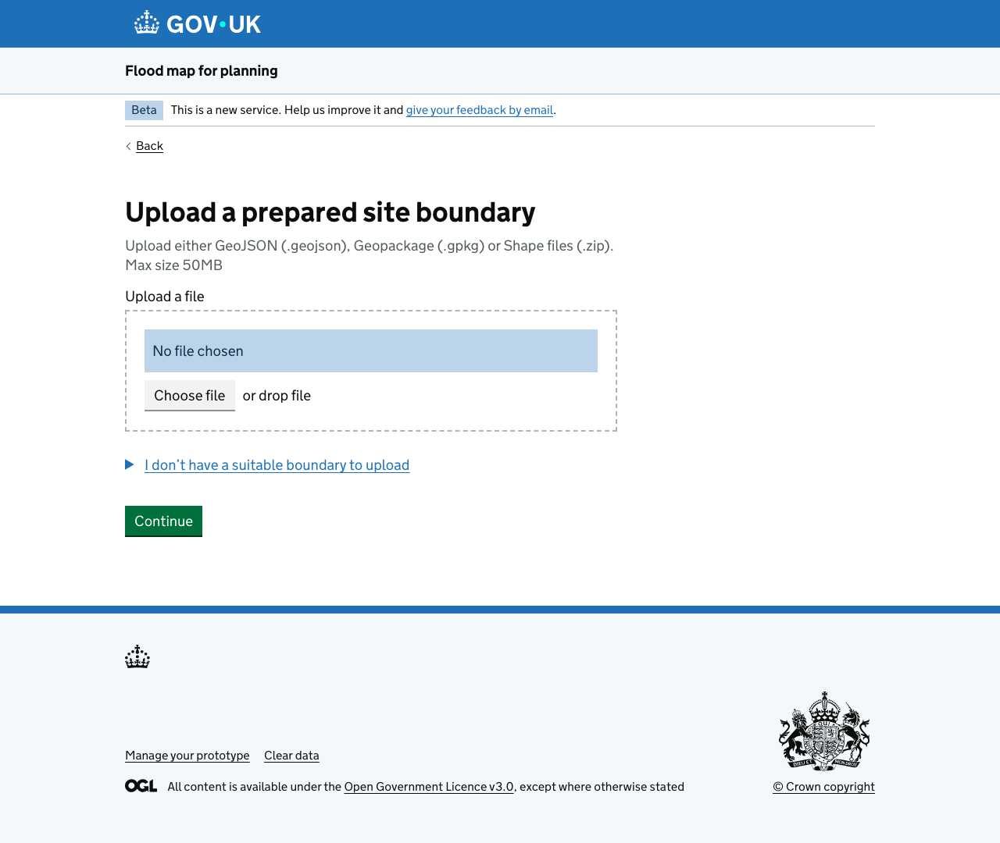
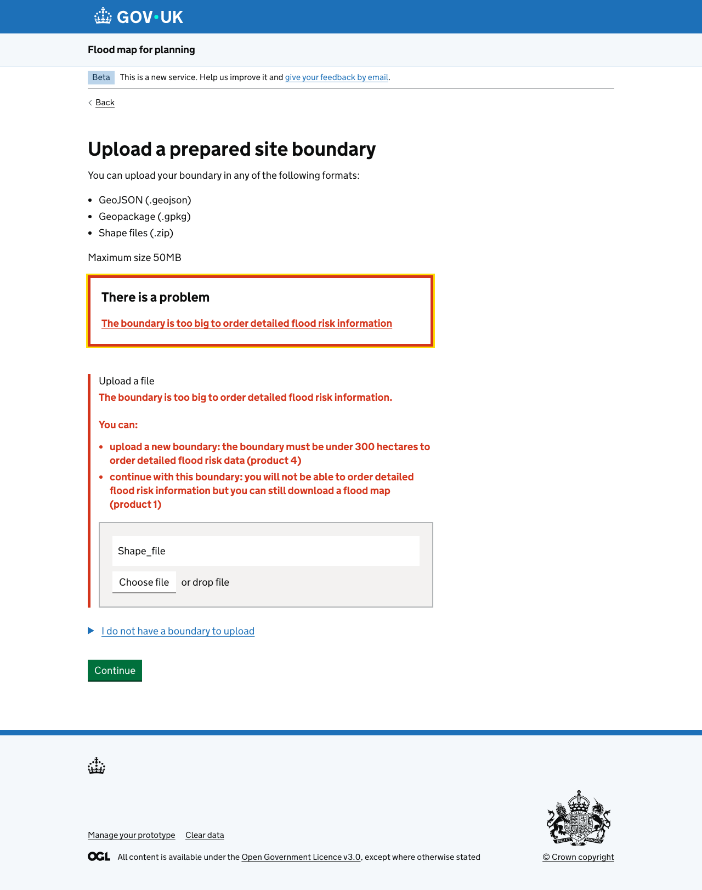
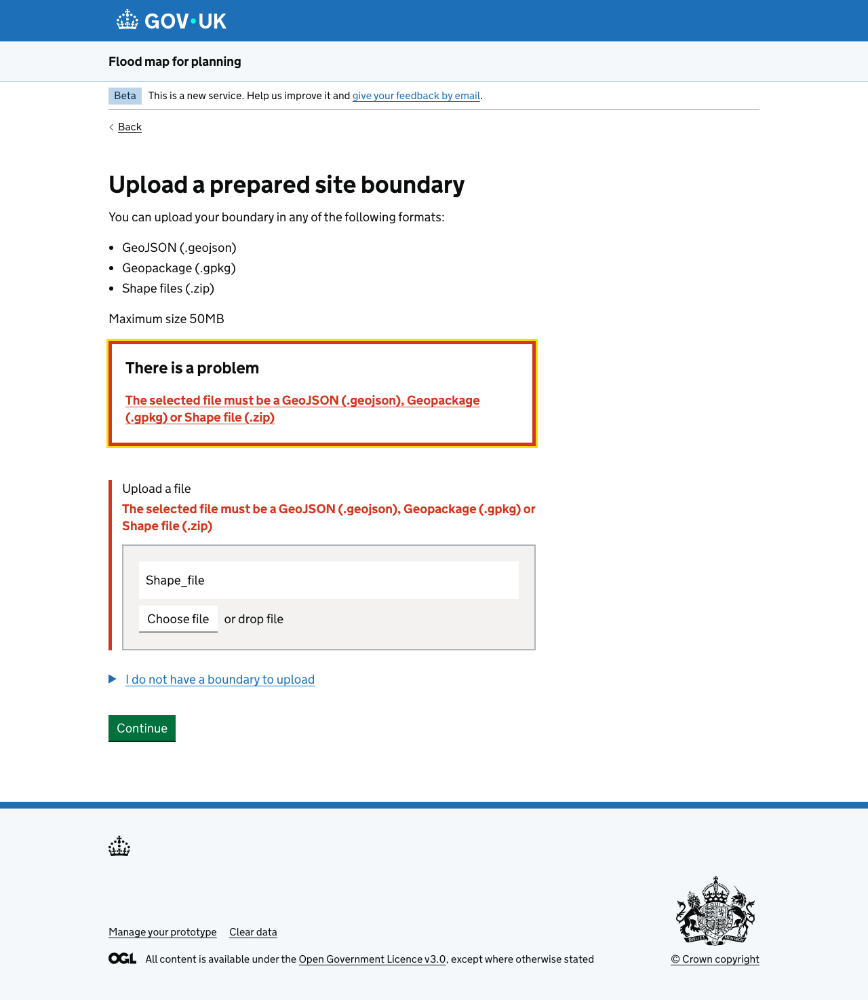
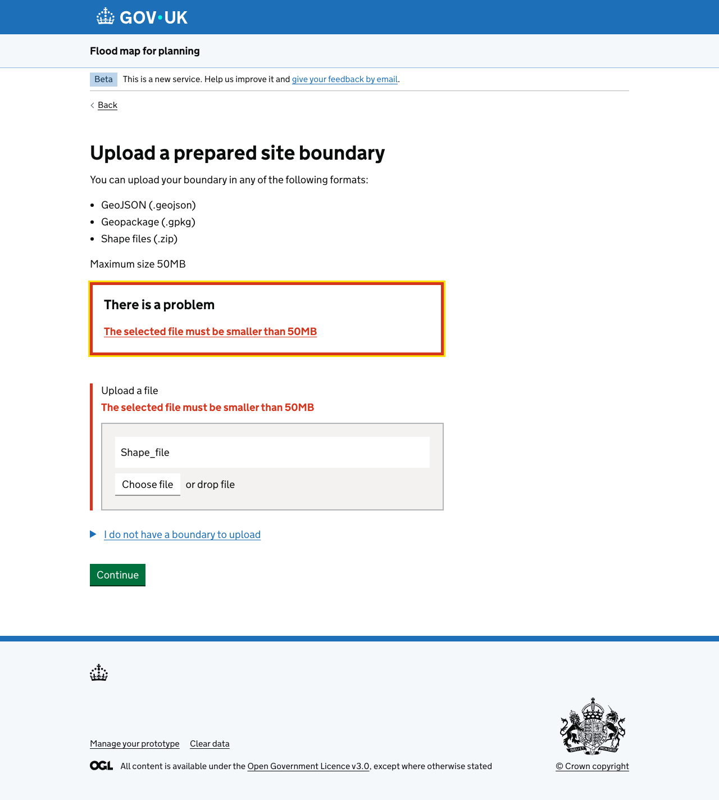
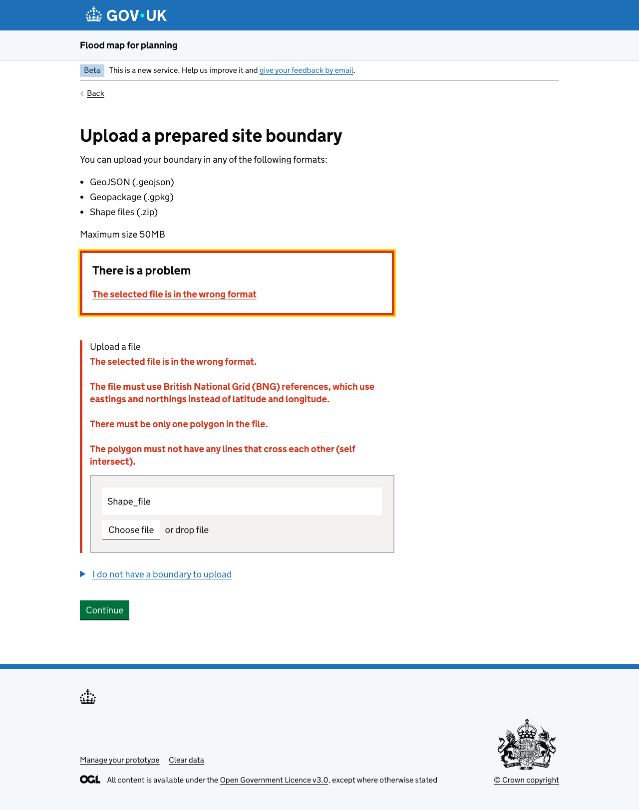

Research carried out April to May 2026
User research
This research round tested a new journey for uploading a boundary file, as an alternative to drawing a boundary on the map.
Users can currently define a boundary by adding a square or drawing a polygon. Adding a square is accessible but not very precise. Drawing a polygon is more popular, but can be difficult for large sites and is not accessible to keyboard-only users.
Partnership and Strategic Officers also receive boundary information by email and have to draw the boundary themselves on behalf of users. Previous research suggested that letting users upload a shapefile could meet these needs.
We wanted to understand whether users would use a boundary upload option, and how usable the proposed journey was.
For usability testing we spoke to 5 flood risk professionals (technical users). 3 had GIS expertise, and all were familiar with shapefiles.
When asked how they define boundaries today, most survey respondents were satisfied with the current options, and drawing a polygon was the most used because it is flexible, easy and accurate. Large, complex or linear sites are harder to draw. Recent improvements to zoom and map detail have made drawing easier, although users still use other tools such as Google Maps to find and orientate themselves to a site.
Flood Map for Planning is often used early, for scoping and feasibility checks before a project is confirmed. At this stage users usually only have a PDF or image from their client. Larger commercial clients are more likely to provide shapefiles.
Users saw value in uploading a boundary when a site is large or complicated, when a client has provided a shapefile, when ordering a Product 1, or when the client's plan is not accurate enough. In these cases it could save time and reduce digitising errors.
Users or their colleagues often create shapefiles themselves from PDFs or images. This is time-consuming, so users weigh it up against the time it would take to draw the boundary, and are unlikely to do it before work is confirmed.
When requesting a Product 4, some users deliberately draw a boundary wider than their site to include data on relevant nearby features. Uploaded shapefiles are seen as fixed and risky to edit, which makes this harder.
Users understood what the error messages were telling them, but resolving the problem depended on their own internal processes. The use of "format" to describe the data within a file was questioned, and users with less GIS experience may feel less confident.
Zipped shapefiles were the most commonly used boundary file type, but AutoCAD (.dwg) files were also popular and were seen as the easiest format by some.





{% endblock %}